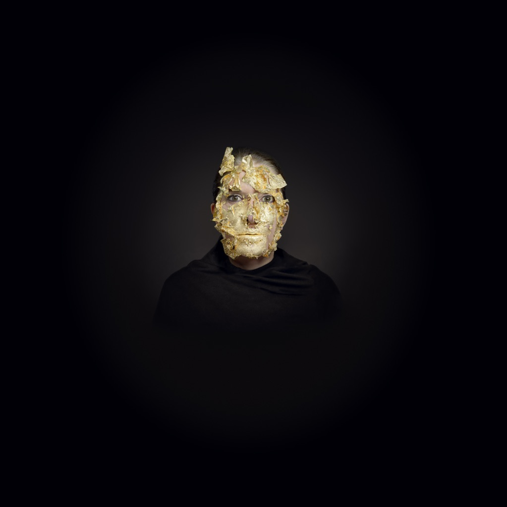
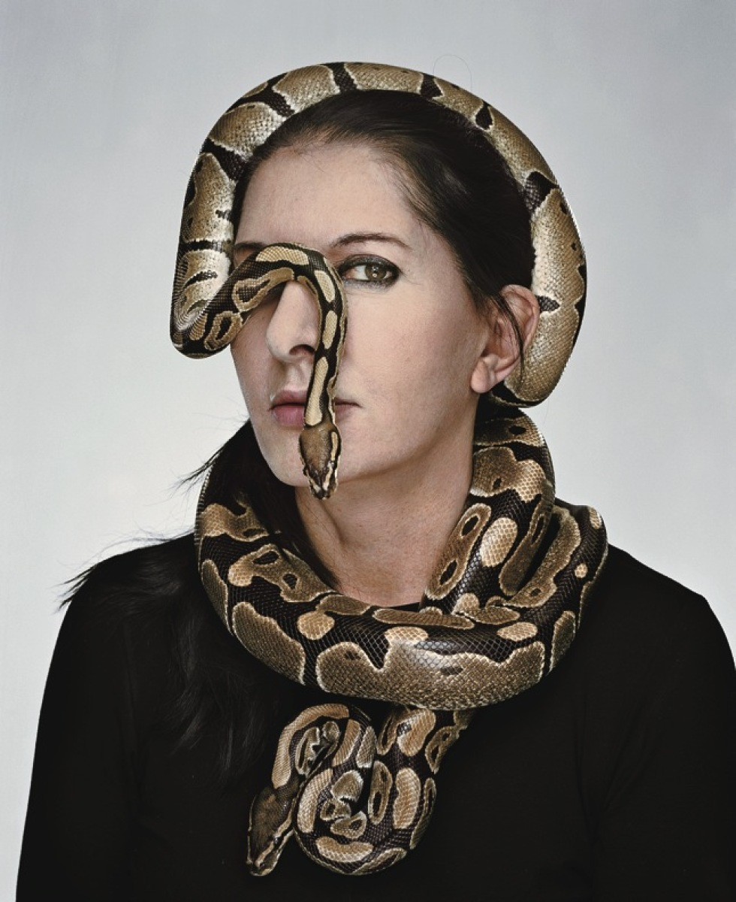

Si può classificare come opera d'arte anche qualcosa che non sia una statua o un dipinto? Come interagisce
l’artista con l’atto della creazione? Sono queste le domande sulle quali gli artisti del novecento hanno
dibattuto per anni. Le avanguardie hanno portato innovazione, ma pochi artisti si sono allontanati dalle
manifestazioni classiche di immagine e forma.
Il viaggio che ha portato il concetto di opera d’arte ad approdare sul terreno della “performance”, cioè
dell’espressione artistica in cui non solo l’artista è nell’opera, ma interagisce con il fruitore dell’opera
stessa allo scopo di indagare le pulsioni profonde dell’essere, è un viaggio che si snoda in più tappe ognuna
delle quali rappresenta una conquista e un abbandono.
La conquista è nel senso di acquisire nuove modalità di espressione, l’abbandono è in relazione alla perdita di
dogmi ritenuti limitanti come quello per esempio che considera la creazione artistica un prodotto che nasce
dall’artista e si separa da lui.
Nell’arte come performance l’artista è presente, è l’opera, è spettatore e creatore, è lui stesso creazione
nella
creazione.

Biografia
Marina Abramovic nasce a Belgrado nel 1946, entrambi i genitori erano partigiani della seconda guerra mondiale: suo padre
Vojin Abramović fu un comandante riconosciuto, dopo la guerra, eroe nazionale;
sua madre Danica, maggiore dell'esercito, alla metà degli anni sessanta fu nominata direttrice del Museo della
Rivoluzione e Arte di Belgrado. Dal 1965 al 1972 Marina frequenta l'Accademia delle Belle Arti di Belgrado.
Nel 1975, si stabilisce ad Amsterdam dove conosce Ulay (nome d'arte di Uwe Laysiepen)
col quale instaurerà una relazione sia artistica sia amorosa che durerà 10 anni per concludersi
nel 1988. Il modo in cui decidono di porre fine alla loro relazione è molto particolare: infatti decidono di
percorrere la Grande muraglia cinese
partendo dalle estremità opposte,per poi incontrarsi, dopo 90 giorni di cammino, al centro della muraglia per
dirsi addio.
Dopo la separazione con Ulay, Marina, continua la sua ricerca dell'animo umano
e dei suoi limiti. Nel 1977 mette in atto la performance Balkan Baroque che le permetterà di vincere il Leone D'Oro.
Nel 2010 al Moma di New York dà vita a "The Artist is present", una performance che grazie al suo successo la consacra
tra i più grandi artisti contemporanei. Tale opera inoltre ha dato il titolo ad un documentario riguardante la sua
vita personale e d'artista.
Performance
Questa opera,intitolata Rhythm 0, venne messa in atto nel 1974 a Napoli. L'abramovic mise a disposizione della folla 72 oggetti suddivisi in oggetti di piacere e di dolore, i quali, nelle successive 6 ore,
dovevano essere utilizzati dal pubblico per interagire con l'artista. Inizialmente le persone si mostrarono intimidite e titubanti. Con il passare delle ore il pubblico si fa
sempre più aggressivo, le persone iniziano a palparla, tagliarla e legala. L'apice della violenza si manifesta quando un uomo arriva a metterle una pistola carica in mano puntandogliela
alla gola.
Rhythm 5 venne eseguita nel 1974 a Belgrado. Marina pone una stella a cinque punte di legno sul pavimento, la riempie di trucioli e le dà fuoco. Successivamente inizia a tagliarsi
capelli e unghie per poi gettarli nel fuoco in modo tale da ravvivarlo. Una volta compiuto questo rito, simbolo di purificazione, scavalca le fiamme e si sdraia al centro della stella.
Dopo poco il pubblico si accorge che l'Abramovic aveva perso i sensi a causa della mancanza di ossigeno, l'artista viene quindi soccorsa e portata in ospedale.
Nel 1977 Marina Abramovic e il suo compagno Ulay eseguono la performance "Relation in Time": si rinchiudono in una standa soli, seduti, immobili e in silenzio. I due guardano dai lati opposti, l'unico collegamento
tra loro sono i capelli i quali sono legati in una matassa. Solo allo scoccare della diciassettesima ora il pubblico può entrare nella stanza e assistere alla performance. Il
visitatore può assistere a come lo scorrere del tempo abbia influito sul loro legame: i capelli infatti sono spettinati, il nodo che li tiene uniti si sta per sciogliere.
Gli altri non possono vedere un legame che si crea, una relazione che nasce, ma solo quel poco che rimane, che riesce a sopravvivere.
Nel 1980 Marina e Ulay danno vita a "Rest Energy": durante la performance Ulay tende un arco con una freccia puntata sul cuore di Marina.
Tale opera vuole rappresentare gli estremi livelli di fiducia e vulnerabilità che caratterizzano qualunque relazione significativa.
In Imponderabilia (1977) Marina Abramovic e Ulay collaborano per creare una performance in cui, completamente nudi, fiancheggiano l’ingresso alla Galleria Comunale d’Arte Moderna di Bologna.
I visitatori che vogliono entrare nel museo sono costretti a passare attraverso i loro corpi. Ciò che la performance vuole esplorare è la reazione del pubblico con i due artisti.
Ogni visitatore del museo deve prendere due decisioni importanti: in primo luogo, deve decidere se entrare o meno nel museo, secondo, deve decidere quale figura affrontare nel momento in cui dovrà passare attraverso l’ingresso.
La natura tabù della nudità rende questa decisione molto critica.
Osservando i visitatori che entrano nel museo, diventa subito chiaro che la maggior parte di essi scelgono di affrontare l’Abramovic, suggerendo che il nudo femminile è meno minaccioso rispetto al nudo maschile.
I visitatori passano in fretta e non accennano a un minimo contatto visivo con Abramovic e Ulay, raramente guardano dietro dopo che sono passati.
La caratteristica della vulnerabilità che normalmente accompagna la figura nuda è stata trasferita completamente al visitatore vestito, messo in “analisi”.
Il progetto di "The Great Wall walk" nasce abbastanza presto, almeno come idea: sono gli inizi degli anni Ottanta quando la coppia pensa a una camminata sulla Grande Muraglia cinese, a suggello del loro percorso come artisti e come innamorati.
Avrebbero camminato l’uno verso l’altra e al momento dell’incontro, che doveva avvenire a metà strada, si sarebbero sposati.
Tuttavia, solamente nel 1988 le autorità cinesi concedono loro il permesso di concretizzare la performance e filmarla, ma la coppia è ormai in crisi da tempo, non vivono più nemmeno sotto lo stesso tetto.
Ulay crede però che questo permesso sia come un segno, un dono: è la possibilità di coronare dodici anni di vita artistica e sentimentale condivisa, e di prendere infine due strade diverse.
Per farlo, devono venirsi incontro un’ultima volta. La Abramović partì a piedi dal punto più a est, il Golfo di Bohai sul Mar Giallo, mentre Ulay fece altrettanto dall’estremità occidentale, che si trova nella parte sud-ovest del Deserto del Gobi.
Dopo 90 giorni si incontrano, finalmente si avvicinano, si prendono per mano, per dividersi definitivamente.
È il 1997 quando Marina Abramović esegue alla Biennale di Venezia la performance Balkan Baroque.
Nell'opera l'artista pulisce in modo ossessivo tonnellate di ossa di mucca come forte denuncia verso la guerra nell’ex Jugoslavia che ancora non
si era arrestata.
Seduta su settecento ossa di mucca pulite a loro volta coperte con trecento ossa fresche piene di nervi e cartilagini, si mette a pulirle
in modo maniacale, una ad una, con una spazzola e dell’acqua alternando periodi di silenzio a lunghi pianti quasi isterici,
cantando canzoni folcloristiche dell’ex Jugoslavia, vestendo con la stessa camicia da notte e gli stessi slip per tutte le 7 ore dei 4 giorni.
Ciò che stupisce di più i visitatori non è la scena “barocca” che si trovavano di fronte,
ma il tanfo provocato dalle ossa non ancora pulite che marcivano e si riempivano di vermi impregnando i visitatori di quell’odore disgustoso,
come fosse un ricordo.
Le ossa e il puzzo, che le fecero vincere il Leone d’Oro, sono il simbolo di una guerra che avveniva al di là dell’Adriatico.
Balkan Baroque vuole enfatizzare gli eccessi di quella guerra che i Balcani hanno dovuto affrontare.
The artist is present è sicuramente una delle opere recenti più significative dell'Abramovic,
messa in atto nel 2010 al Moma a New York. L'artista rimane seduta immobile per tre mesi 7 ore al giorno su una sedia, di frnte a lei un tavolo e
all'estremità opposta una sedia. Chiunque voglia può sedersi ed interagire con Marina guardandola negli occhi. La performance è un
fluire continuo di emozioni. All'insaputa dell'Abramovic tra il pubblico si nasconde anche Ulay,
il quale attende il suo turno e si va a sedere di fronte a lei. Quando Marina alza la testa riesce a stento a trattenere
le lascrime nel vedere l'ex-compagno dopo più di venti anni.

About
Progetto realizzato da Giulia Lepori (matricola) per l'esame di programmazione e progettazione web del corso di laurea di Informatica Umanistica.
I testi e le informazioni sono state ricavate da wikipedia, artslife, dall'enciclopedia Treccani e in gran parte scritte da me.
Le immagini sono state prese da google immagini e nonsono state modificate.
Tutte le pagine HTML e CSS presenti sul sito sono state validate secondo lo standard HTML e W3C.